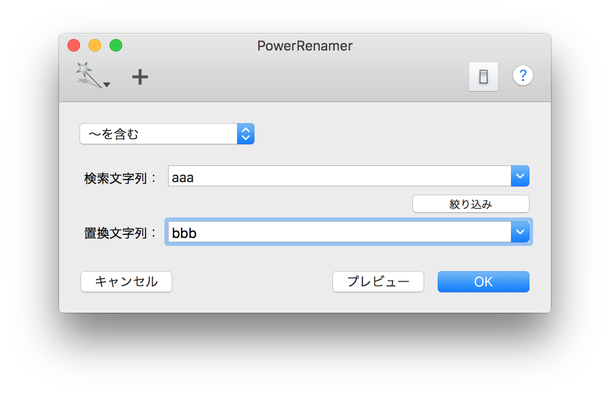

たくさんのファイルの名前を一度に変えるアプリケーションです。あるパターンにマッチしたファイル名の一部を、別の文字列に置き換える事ができます。
Finder で選択されているファイルやフォルダに対して実行されるので、直感的かつすばやく操作する事ができると思います。実際にファイル名の変更を実行する前に、変更結果をプレビューすることもできます。

例えば、「xxxxx.txt」というファイルの拡張子を、まとめて、「xxxxx.text」と変えるなどが典型的な使い方でしょうか。